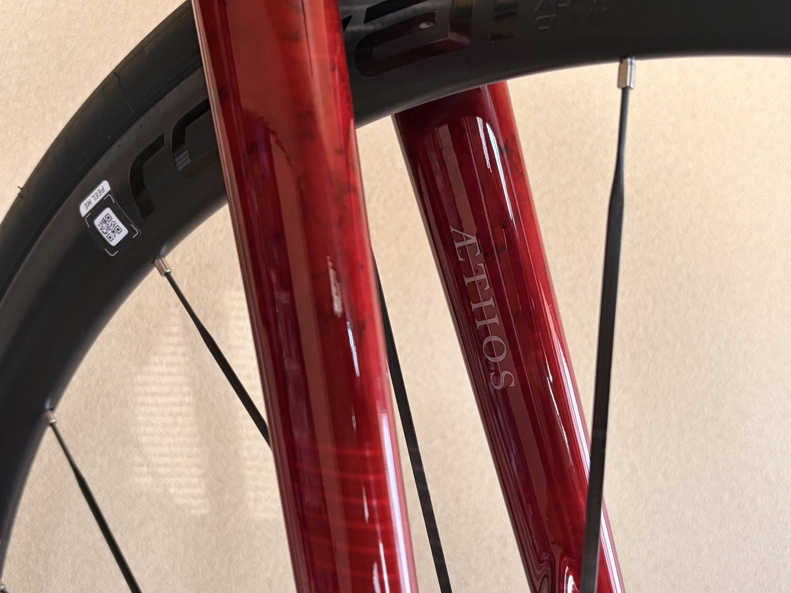
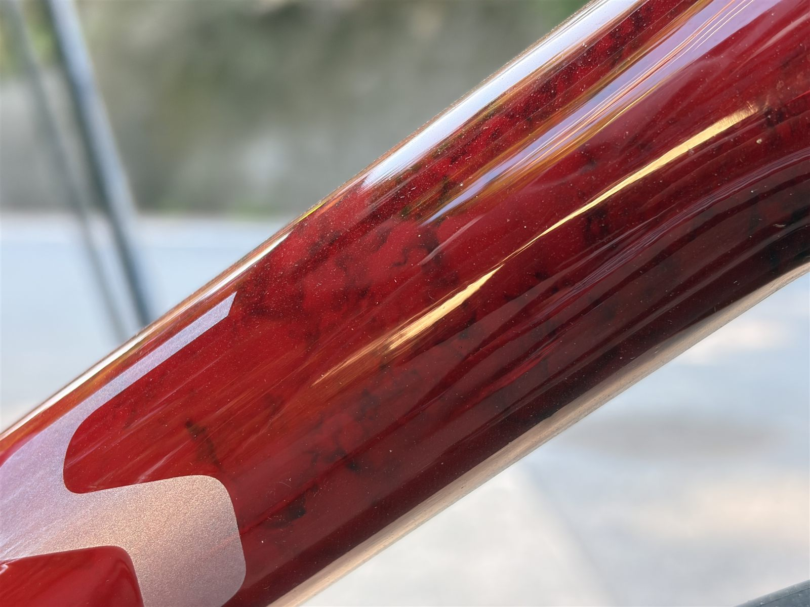
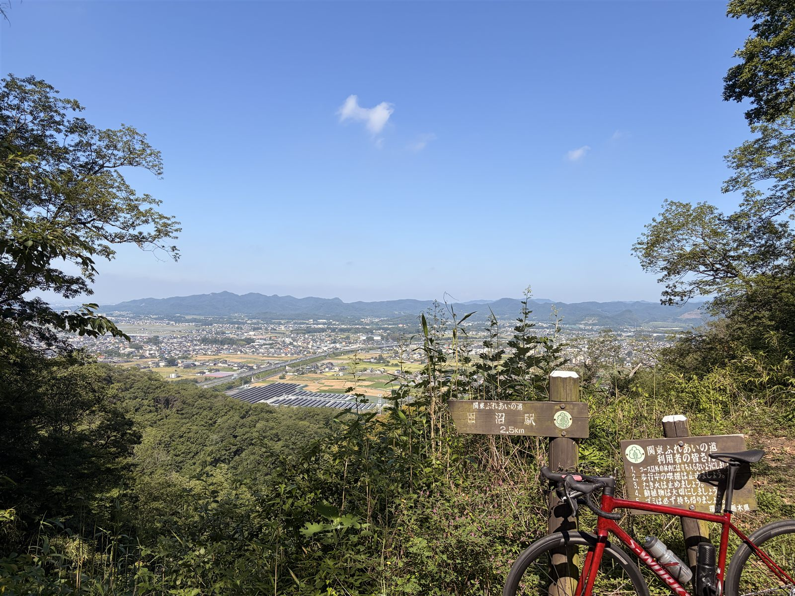
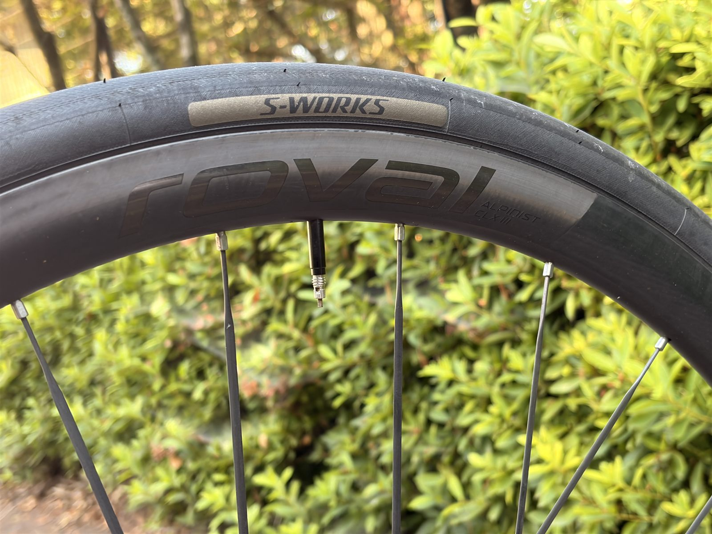

Aethos2乗りが、富士ヒル目線でSL8と比べてみた
私はAethos2に乗っている。レースで勝つために買ったわけではなく、普段のライドを気持ちよく走るために選んだバイクだ。それなのに富士ヒルゴールドを本気で狙い始めたら、ふと「Tarmac SL8の方が速いんじゃないか」と気になってしまった。せっかくなので、AIと一緒に自分のAethos2を富士ヒル目線で見直してみる。

全部読むのが面倒な人向けまとめ
- 結論富士ヒルではSL8がわずかに速そう。でも差は小さく、Aethos2で十分。買い替えない
- 設計思想エネルギーを注ぐTarmac / 寄り添ってくれるAethos
- 勾配8%が分かれ目。富士ヒル（平均5.6%）は緩いのでSL8寄り、激坂はAethos
- ホイール一瞬Rapideに迷ったが、使用場面・コスト・「己を鍛える」でやめた
- 結局効くのは脚（W/kg）とペース。機材より自分
そもそも、レースで走る気はなかった
白状すると、私はAethos2をレースのために買ったわけではない。買った当時はレースで結果を追う気がなくて、普段のライドを気持ちよく走れることを優先して選んだ。そして今も、その選択には満足している。Aethosは長く走っても疲れにくく、乗っていて気持ちのいいバイクだ。
ところが最近、富士ヒルゴールドを本気で狙い始めて、少し話が変わってきた。レースで結果を追うとなると、求めるものが「気持ちよさ」から「出力と反応」に寄っていく。買った時の思想と、今の思想が、地味にズレてきたのである。

昔、Tarmac SL6に乗っていた
実は私、昔はTarmacに乗っていた。SL6、今から2世代前のモデルだ。それでも、踏んだ瞬間の反応の良さと加速感には、はっきりインパクトがあった。脚を入れた分が、そのまま前に出る感じである。
Aethosに乗り換えてその記憶は薄れていたのだが、レースを意識し始めた今、なぜかあの感覚を思い出す。TarmacとAethosはそもそも設計思想が違うバイクなのだと、体で分かっている部分がある。（昔のSL6の話はこちらの記事でも書いている。）

注ぐTarmac、寄り添うAethos
私の体感を言葉にすると、こうなる。Tarmacは、自分からエネルギーをガンガン注いでいくバイク。踏めば踏むだけ応えてくれるが、こちらも気合いを入れて踏みにいく必要がある。一方でAethosは、バイクが寄り添って走ってくれる感じがある。
面白いのは、Aethosは「踏んでいる感じがしないのに、パワーは思ったより出ている」ことがある点だ。必死に踏みにいかなくても、気づけば数字が出ている。Tarmacが「出力を引き出す」なら、Aethosは「勝手に出ている」に近い。どちらが良い悪いではなく、性格がはっきり違う。

富士ヒル目線で、冷静に比べてみる
ここからは、富士ヒル（平均勾配5.6%・速度はだいたい18〜19km/h）を基準に、AIと一緒に整理してみた。性格の違うバイクを、あえて同じ土俵に乗せてみる。
| 観点 | Aethos（私の相棒） | Tarmac SL8 |
|---|---|---|
| キャラクター | 寄り添って走る・快適 | エネルギーを注ぐ・反応 |
| 重量 | フレームは軽い（完成車だと差は小） | 軽い（UCI下限も狙える） |
| エアロ | 非エアロ | エアロ |
| 得意な勾配 | 激坂（8%超）でぐいぐい | 緩い〜8%、アップダウン |
| 反応・加速 | 穏やか（踏んでないのに出てる） | 鋭い（SL6でも体感した） |
| 富士ヒル（5.6%） | 戦える | エアロが少し効く |
ポイントはいくつかある。まず重量。フレーム単体ではAethosが軽いが、完成車レベルだと差はほぼ誤差になる。次にエアロ。富士ヒルは平均5.6%と緩めで18〜19km/hも出るので、この速度域だとSL8のエアロは地味に効く。実際、勾配8%あたりが分かれ目で、それ以下はSL8、それ以上の激坂はAethos、という見方がある。富士ヒルは大半が8%以下なので、理屈ではSL8寄りだ。
誤解しやすいのが快適性である。「Aethosは快適だから脚が残る」はよく言われるが、これは"踏む力が減る"という意味ではない。快適なバイクが減らすのは、振動を受け止める無駄な疲労であって、出力そのものは減らない。しかも富士ヒルは舗装が綺麗な登り一本なので、その快適性の効果も実はそこまで大きくない。ついでに言うと「硬い方がパワーが逃げず速い」も、実際の差はごくわずかだ。結局、富士ヒルで効くフレーム差はエアロと重量で、どちらも差は小さい。
激坂なら、やっぱりAethos
念のため言っておくと、Aethosが不利な場面ばかりではない。勾配がきつくなって速度が落ちると、エアロの効きは小さくなり、代わりに車体の軽さがモノを言う。実際、激坂ではAethosは本当によく登ってくれる。富士ヒルはそこまで急ではないが、もっと激しい山なら話は変わる。Aethosは「緩い登りで不利・激坂で有利」なバイクなのだと思う。

ホイールも、一瞬だけ心が動いた
フレームだけでなく、ホイールでも同じ迷いがあった。今はROVAL Alpinist CLX IIIという軽量ヒルクライム向けのホイールを履いているのだが、一瞬、エアロの Rapide CLX III に履き替えようかと思った。富士ヒルでエアロが効くなら、ホイールから攻めるのもありかな、と。
でも、やめた。理由は三つ。エアロホイールが効く場面が限られること。だったら同じお金と労力は、己を鍛える方に振った方がいいと感じたこと。そして単純に、高い。フレームの結論とまったく同じで、ここでも「機材より自分」に落ち着いた。

今日の結論
調べる前は「普段使いのAethos」くらいに思っていたが、富士ヒル目線で見ると、確かにTarmac SL8の方がわずかに速そうではある。エアロも反応も、レースで結果を追うなら魅力的だ。それは正直に認める。
それでも、私はAethos2で十分だと思っている。差は数十秒オーダーで、まず効くのは脚（W/kg）とペース。何より、この赤いフレームが気に入っている。乗るほどに、相棒みたいな感じが出てきた。買い替えるより、この相棒で脚を鍛えて富士ヒルゴールドを獲る方が、私には合っている。バイクのせいにするのは、もうやめだ。
自分用メモ
- 優先機材より脚。W/kgとペースに投資する
- ホイール当面 Alpinist CLX III で続投。Rapideは見送り
- 頭の片隅富士ヒルは緩斜面＝エアロも効く。でも今は脚
関連記事
 Tarmacつながり
旧ブログ発掘 / 2026.06.10
Tarmac SL6を今読み直す。Aethos2で富士ヒルへ行く前に
Tarmacつながり
旧ブログ発掘 / 2026.06.10
Tarmac SL6を今読み直す。Aethos2で富士ヒルへ行く前に
2019年の実績と、今のAethos2をつなぐ機材リメイク。昔の機材感覚を今の目線で整理します。
 Aethos2つながり
機材とアイテム / 2026.06.16
Aethos2のステムキャップをWolfTooth MK0に交換。軽量化はなかったけどカッコいいからヨシ
Aethos2つながり
機材とアイテム / 2026.06.16
Aethos2のステムキャップをWolfTooth MK0に交換。軽量化はなかったけどカッコいいからヨシ
軽量化を狙ってWolfTooth MK0に交換したら、元の黒キャップも2.4gと軽く、MK0は2.5g。ほぼ同重量だったけど、見た目が良いから満足という短めカスタム日誌です。
 機材とアイテム
機材とアイテム / 2026.06.17
iGPSPORT HR70レビュー。胸ベルトが苦手でも心拍が取れた
機材とアイテム
機材とアイテム / 2026.06.17
iGPSPORT HR70レビュー。胸ベルトが苦手でも心拍が取れた
胸ベルト式が苦手で10年以上心拍計から離れていた私が、腕バンド型のiGPSPORT HR70を初投入。苦しくない・装着が楽・Garminの評価も現実に近づいた初回レビューです。